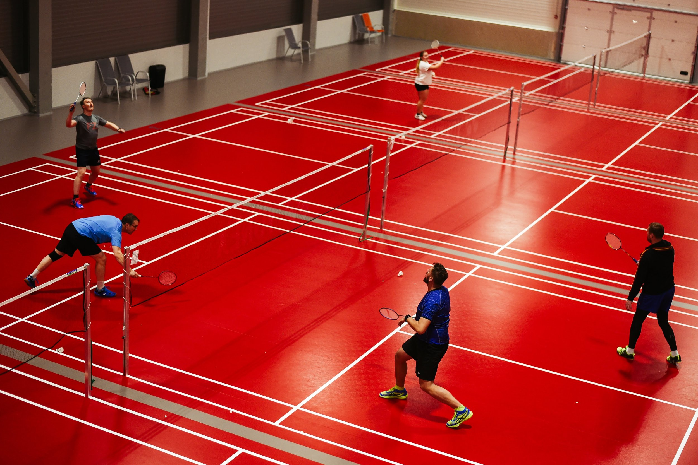
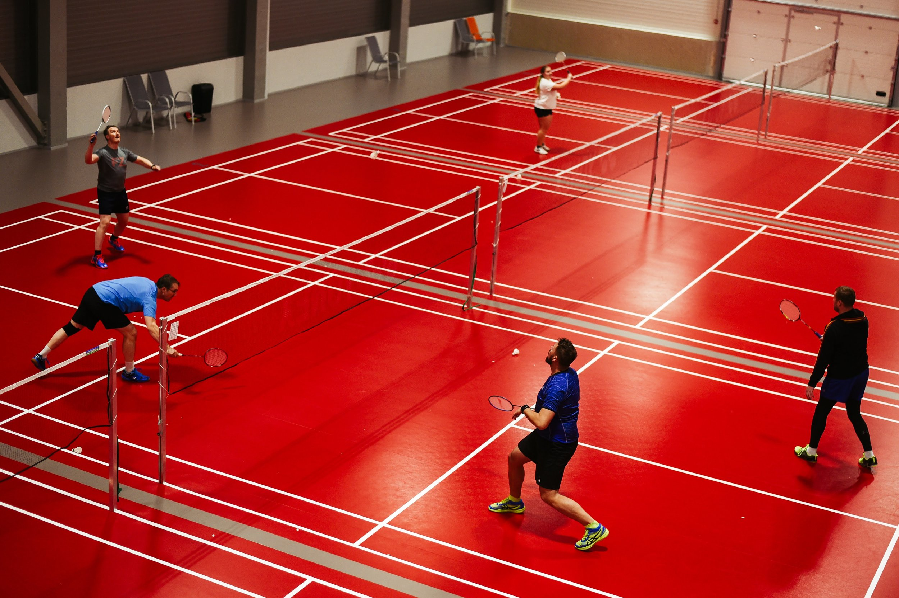

Oled jõudnud Tartu reketspordi veebileheküljele. Meie lehelt on võimalik saada informatsiooni selle kohta, kus saab Tartus tegeleda erinevate reketspordialadega. See leht on mõeldud kõigile, kellel on vaja leida spordialale sobivat väljakut või ruumi, sealhulgas harrastajatele, tippsportlastele, treeneritele, ürituste organiseerijatele, spordiklubidele. Andmekogu võimaldab saada head ülevaadet reketspordi harrastamise võimalustest ning tegevusi seeläbi hõlpsamini planeerida.